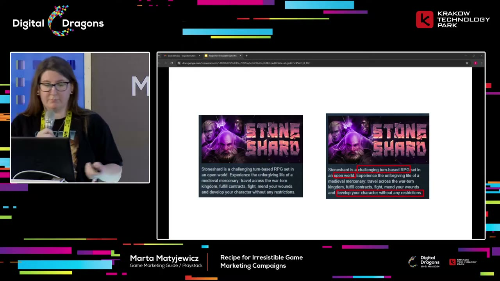
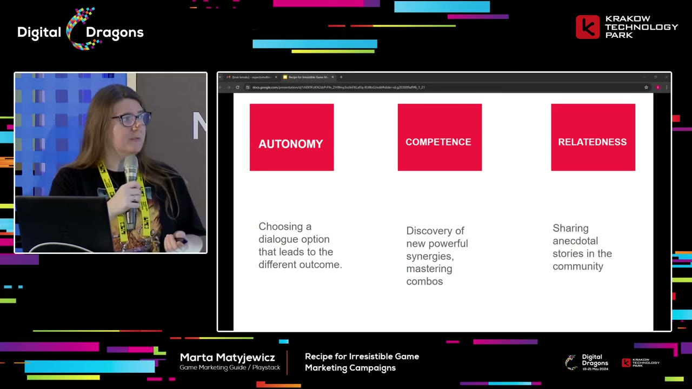
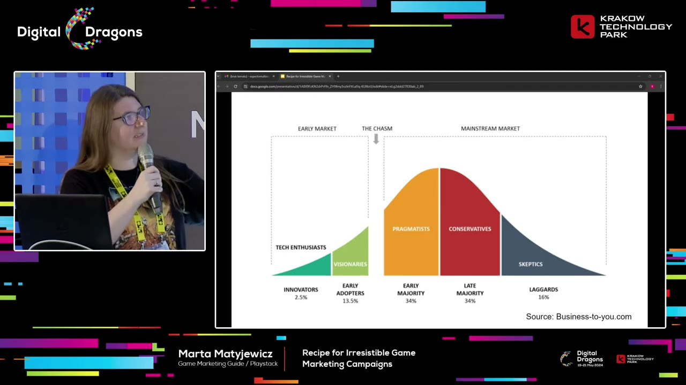

Start here
The overview
Marta Matyjewicz argues that a campaign becomes more persuasive when it starts from the player’s reasons to care. Her method has three levels: study competitors’ communication, study what players say about those games, and investigate the motivations behind their responses. The result should change both the product’s proposition and the way it is explained. She connects that research to concrete content, early adopters, media outreach, and a hook–attention–action sequence.
What the snapshots add
- The Stoneshard and short-description examples show the difference between readable experience promises and unfamiliar lore.
- A completed motivation slide supplies the relatedness example missing from an earlier reveal; the adoption chart also clarifies the approximate spoken percentage.
What to take away
- Investigate the content you can change
Matyjewicz warns against blaming algorithms or adding advertising spend before checking whether the message gives players a reason to care.
- Go beyond collecting competitor assets
Store pages show what rivals say; reviews reveal player judgments; observing play helps explain the underlying motivation.
- Make novelty meaningful
A unique detail is not enough. The difference must connect to an experience the intended audience wants.
A failed campaign can reveal a problem you actually control
Matyjewicz opens with the story of an inexperienced but enthusiastic marketer asked to help launch a game after years of development. The assignment sounds simple: prepare the assets, follow the advice, send press releases, use the right posting times and hashtags, and perhaps get the game onto a major outlet's front page. Hard work feels as though it should guarantee an outcome. It does not.
In her account, the launch arrives and little happens. One explanation is that a platform suppressed the campaign. A second attempt adds a $10,000 advertising budget; when that also disappoints, the instinct is to ask for three times as much and add creators. The cycle repeats while the central assumption goes untested: perhaps the content itself does not interest its intended audience.
She describes that realization as liberating. A small developer has little control over a large platform's decisions, but can improve an unclear or unappealing message. Seeing similarly sized games succeed under comparable constraints is a reason to investigate that possibility. Money can help, yet expensive campaigns and products also fail. More spending is not a complete explanation of success.
The opening is an argument for agency, not proof that every weak result comes from bad content or that distribution never matters. Its practical challenge is to inspect the part of the campaign the team can change before assuming a larger budget or an algorithm trick will solve the problem.
Research gives small teams a way to improve their odds
She explicitly qualifies her criticism of algorithm chasing. Some platform mechanics matter enough to understand. Her example is Steam Next Fest: she describes a reinforcing effect in which prominent placement produces wishlists, while existing interest helps a game get prominent placement. The platform claim belongs to the recording; her purpose is to explain why a team should build demand before expecting an event to create it all.
For a smaller studio without a large research budget, she proposes investigating competitors directly. Start with a list of games that occupy a relevant space, rather than selecting only famous games with very different production values or audiences. That list becomes the material for three successive levels of research.
She shows SteamPeek as a way to discover similar games using a known title and included or excluded tags. The inspected title slide confirms the tool name as SteamPeek.hu. She also discusses a game-statistics service with filters such as followers and release dates and with estimated revenue. The small search-interface snapshot establishes the kind of filtering and results table shown, but its individual entries are too small to transcribe reliably.
Estimated revenue can help a team think about what success means among comparable games. It should not turn a list of rivals into a promise that this project can achieve the same outcome. The research first establishes context: who else is competing for this player's attention, how they present themselves, and what level of response they appear to receive.
Level one: collect how competing games communicate
For each competitor, Matyjewicz recommends collecting the short description, tags, screenshots, trailers, and other public communication. Her Stoneshard example shows a capsule and description alongside gameplay screenshots with visible interface panels. She encourages thorough observation because repeated details can reveal how a genre teaches customers to recognize it.
The screenshot question is a useful example. Developers often ask whether they should hide the user interface. Rather than answer only from personal taste, inspect how comparable games show their mechanics and what information the interface conveys. Her own preference is to include useful UI because it can tell a knowledgeable player what kind of systems the game contains. The broader point is to make the experience legible.
For trailers, she asks about pacing, title cards, voiceover, the order of features, and the features chosen at all. For written descriptions, identify recurring keywords and promises. In the inspected Stoneshard comparison, the highlighted phrases describe a challenging turn-based RPG, an open world, and unrestricted character development. Those are statements about an experience, not just decorative adjectives.
She extends the collection to press releases on Games Press and content on Twitter/X. What information was sent to journalists? What angles did the team emphasize? What posts and hashtags did it use? The exercise is meant to create confidence about the competitive environment and expose omissions or confusing parts of the team's own communication.
This level answers what competitors did. It provides inspiration and a basis for comparison, but does not yet explain whether players cared about the same things. That requires the next level.


Level two: investigate what players praise, request, and dislike
The second level gathers reviews and player comments. Matyjewicz wants to know what people say they enjoy, what they wish a game offered, and what annoys them. A competitor's description may emphasize one feature while its players repeatedly praise another. That difference can reveal a more useful angle for communication.
The findings can also identify a legitimate advantage in the team's own game. If players dislike a recurring problem in alternatives and this project solves it, demonstrating that solution gives a post a purpose. If players repeatedly request an experience the game already supports, a feature buried in production notes may become useful public content.
This helps answer the developer's recurring question of what to post. Instead of treating a content calendar as a demand for arbitrary updates, use it to show things that the intended audience has already demonstrated interest in. Player feedback supplies candidate subjects and language. It is evidence of stated preferences, rather than a complete explanation of why people behave as they do.
Research may expose a product problem, not just a promotion problem
After comparing both communication and player feedback, Matyjewicz realized that not every failure was a marketer's execution problem. Some games had been developed for two or three years before anyone seriously considered how they would attract an audience. By then, the team might be asking promotion to compensate for a proposition that never gave players much reason to choose the game.
She therefore argues for pairing marketing with production from the start. Her objection to the phrase unique selling point is that teams can overvalue the word unique. A Vampire Survivors-style game with blue characters might be different from an existing title, yet the color change alone does not explain why someone wants to play it. Novelty has to matter to the person being asked to care.
She prefers to think in terms of a reason to care. The question becomes what meaningful experience or benefit makes this game worth attention. That can influence the game while it is still being shaped, instead of leaving a marketer to invent a distinction near release.
Another problem is misalignment between the details developers value and those a new player needs. In the inspected short-description example, the text spends space on unfamiliar names such as Miden Tower and the Alroval Empire. These may matter greatly inside the fiction but do little to explain the game to a stranger. With limited space, the message must establish what the player can understand and value before expecting investment in its lore.
Test whether a stranger can understand the message
The curse of knowledge makes that misalignment difficult to notice. Someone who has lived with a project knows its genre, setting, vocabulary, and mechanics, and can forget how much of that knowledge a viewer lacks. Communication then skips the basic facts that would let a newcomer interpret the more interesting claims.
Matyjewicz's self-check is to try to forget that she knows the game. Looking at a capsule, screenshot, description, or promotional image, she asks what someone else could understand from the first encounter. Is the genre clear? Is it apparent what is happening? Does the content depend on an explanation that only the team already possesses? This is a way to challenge assumptions rather than a claim that anyone can perfectly erase their own expertise.
She also watches creators reacting to game showcases. A first encounter with a trailer lets her see where people recognize the genre, where they become interested, and where they misunderstand. Chat reactions add another imperfect but useful view of comprehension. The value lies in observing the gap between what the material intends to communicate and what people actually take from it.
This use of Twitch is distinct from treating streaming only as a promotional placement to buy. Public reactions can function as research material that reveals confusion in real time.
Level three: connect behavior to the experience people want
The third level asks what motivates people to act. A campaign wants many actions—clicking a capsule, reading a store page, wishlisting, playing a demo, buying, and eventually playing the full game. Matyjewicz argues that useful communication starts by understanding the reasons behind those actions.
She distinguishes extrinsic motivation, such as receiving a reward or avoiding a penalty, from intrinsic motivation: doing an activity because the activity itself is satisfying. Her focus is the latter. She introduces self-determination theory as a practical lens for thinking about autonomy, competence, and relatedness. The talk uses the model to generate marketing questions; it is not an experimental study of the theory.
Autonomy concerns feeling in control, making meaningful choices, and expressing oneself. Competence concerns getting better at something and feeling effective. A task must have enough challenge to make success satisfying without becoming impossibly difficult; she connects this to the appeal of progression. Relatedness concerns belonging and connection with others.
These categories redirect attention from a feature list to the experience those features enable. A branching dialogue system is more interesting when it allows a consequential choice. A complicated weapon interaction may matter because it lets the player discover a powerful combination and feel skilled. Community storytelling may matter because it makes a person feel part of a group.
Observe play, then map a few central motivations
To investigate these motivations, Matyjewicz records herself playing relevant competing games and comments on what she experiences. When a mechanic produces satisfaction, she tries to identify what happened and which need it served. Recording speech can be easier than interrupting a game to write notes, especially in a cooperative session where pausing to document something could hurt teammates.
She admits that this method requires considerable self-awareness. A complementary route is to watch streamers playing. Their expressions, comments, and interactions with viewers can suggest what produces excitement, frustration, pride, or connection. Those observations are interpretations to investigate, not direct access to another person's mind. They can nevertheless be more informative than only reading a final rating.
The completed inspected example slide maps three concrete experiences: choosing dialogue that changes the outcome under autonomy; discovering powerful synergies and mastering combos under competence; and sharing anecdotal stories in the community under relatedness. The third example is absent from an earlier reveal, so the completed frame is the one reproduced in this reading.
She also offers the Quantic Foundry motivational model as a useful shortcut and additional lens. The inspected chart organizes motivations under Action, Social, Mastery, Achievement, Immersion, and Creativity, with subcategories such as competition, community, challenge, strategy, fantasy, story, design, and discovery. A team can use such a map to consider which motivations best describe the appeal of its game.
Her recommendation is to choose two or three central motivations rather than claiming all of them. A campaign may address additional interests later, but its initial communication needs a clear focus. The research should help the team identify the strongest reasons its intended players would want this particular experience.


Start with people who want to discover something new
Matyjewicz uses a technology-adoption diagram to distinguish an early audience from a mainstream audience. The inspected chart labels innovators at 2.5% and early adopters at 13.5%, followed by early and late majorities and laggards. Her spoken “about fifteen percent” is a loose description of that initial group; the two displayed percentages sum to sixteen. The chart is a conceptual adoption model, not measured segmentation of this game's actual buyers.
Her recommendation is to focus prelaunch communication on people who actively enjoy discovering new things. These may be the players who join a beta, explore a new idea, and help carry it to a wider audience. Trying to satisfy the whole mainstream immediately can dilute the proposition before anyone has a strong reason to advocate for it.
She illustrates later adopters through playful comparisons with shoppers waiting for progressively deeper Steam discounts. Those discount ranges are analogies, not a pricing policy derived from the model. The important distinction is between people eager to engage early and those who need more familiarity, evidence, or a different price before doing so.
The early audience also includes journalists, creators, and business partners. A team needs to understand the motivations of these intermediaries as well as those of eventual players. They can help spread an idea only when the proposition gives them something worth passing on.


Q&A: early marketing means research, and event choices need context
A question about marketing during production leads to an important clarification: she wants the work to begin even before production, when someone first has an idea. In that phase, marketing includes researching competitors and identifying a meaningful reason to choose the game. It does not necessarily mean publishing a stream of work-in-progress screenshots from the first day.
Asked what to post during development, she declines to prescribe a universal format without knowing the game. The three research levels should reveal candidate subjects: what comparable games show, what their players care about, and which motivations this project can serve. Looking at examples can also reveal ways to do something differently. A generic report that the team is building or testing is not automatically interesting to its intended players.
For events, she again recommends examining comparable campaigns and their timelines. When were those games announced? Which events did they join? That evidence can support a more informed decision about timing than an arbitrary calendar. It does not mean copying every competitor beat without considering the project's own situation.
She favors online events for the campaign outcomes she is discussing. Offline events may still be valuable for player feedback, media contacts, and partnerships, but those are specific purposes that should be distinguished from large-scale promotional reach. The answer returns to the same discipline as the rest of the talk: decide whose needs an activity serves and what result would make it worthwhile.
Source & limitations
This is an editorial synthesis of Marta Matyjewicz - Recipe for Irresistible Game Marketing Campaigns, published by Digital Dragons. Timestamp links open YouTube at the corresponding section.
- Based on the full English automatic captions, including both audience questions, and 12 inspected snapshots covering tools, competitor descriptions, motivation models, and the adoption diagram. Intervening slides and video were not exhaustively reviewed.
- Some revealed slides are incomplete at the selected instants; those observations are labeled accordingly and the completed motivation example is used for the article. The small game-statistics interface is not legible enough to transcribe individual values.
- Platform claims and descriptions of research tools reflect the recording rather than independent verification of their current behavior, pricing, or availability.
Inspected snapshots (12)
Selected stills, not continuous video review. Observations below describe the inspected frames.
10:50 ↗
- The slide displays STEAMPEEK.HU above a QR code; it is a tool title slide rather than the search interface.
11:45 ↗
- A Steam marketing search interface shows filters and a table of games with a far-right revenue column outlined; individual entries are too small to transcribe confidently.
13:20 ↗
- Stoneshard example pairs its capsule, description and tags with gameplay screenshots that include interface panels.
15:00 ↗
- Stoneshard description comparison highlights challenging turn-based RPG, open world, and unrestricted character development.
21:10 ↗
- Example description highlights unfamiliar lore names Miden Tower and Alroval Empire within a short fantasy RPG pitch.
26:10 ↗
- Two boxes distinguish extrinsic motivation and intrinsic motivation.
27:30 ↗
- Self-determination theory slide shows Autonomy and Competence; the third red box has not yet been labeled.
28:00 ↗
- Self-determination theory slide still has an unlabeled third box; it does not yet provide the full three-pillar diagram.
32:10 ↗
- Motivation examples show meaningful dialogue outcomes for autonomy and new synergies and combos for competence; relatedness is still represented by question marks.
32:30 ↗
- Completed motivation slide maps autonomy to dialogue outcomes, competence to powerful synergies and mastered combos, and relatedness to community anecdotes.
33:20 ↗
- Quantic Foundry model displays Action, Social, Mastery, Achievement, Immersion, and Creativity, each with two subordinate motivations.
34:30 ↗
- Technology adoption diagram labels innovators 2.5%, early adopters 13.5%, early majority 34%, late majority 34%, and laggards 16%, with a chasm before the mainstream market.
Read the timestamped source captions
en-orig · automatic captions. Caption errors and non-speech labels are retained in this source view.
0:03 ↗ [Music]
0:12 ↗ [Music]
0:21 ↗ okay guys so we're going to start with
0:24 ↗ uh the unconventional slide for my
0:27 ↗ presentation um
0:31 ↗ so these four words uh are the most
0:35 ↗ liberating words I ever heard in my
0:37 ↗ entire life and this um changed the way
0:41 ↗ I'm thinking about marketing uh and this
0:45 ↗ pivoted my career as well you see
0:48 ↗ because uh there is a thing imagine the
0:50 ↗ situation when you are very
0:53 ↗ inexperienced and you've been approached
0:56 ↗ by um Studio guys who are making the
0:59 ↗ games for for about two 3 years and they
1:03 ↗ are um having this uh like mission to
1:07 ↗ release this game and they are giving
1:09 ↗ you the opp opportunity to carry on the
1:12 ↗ torch and you know if there is something
1:17 ↗ that um is worse than being an
1:21 ↗ experienced person uh you need to add to
1:24 ↗ the mix uh also that the person is kind
1:29 ↗ of um
1:31 ↗ overly uh enthusiastic about the task
1:34 ↗ but also kind of um overly uh not
1:38 ↗ ambition but let's call it delusional
1:41 ↗ and when you are giving this opportunity
1:44 ↗ you think yes I'm going to deliver I
1:46 ↗ have this opportunity to carry the game
1:49 ↗ and to show these guys that I can uh do
1:52 ↗ my work because like obviously like the
1:54 ↗ measure of success for these kind of
1:56 ↗ guys is also the simple feat that okay
1:59 ↗ Mara so please put our game on the front
2:01 ↗ page of IGN and it's going to be just
2:03 ↗ fine um and you know when you are this
2:07 ↗ specific mix of um being uh very
2:10 ↗ enthusiastic experience and you know you
2:13 ↗ know all the drill um you think that
2:16 ↗ okay you you are not aware of this
2:18 ↗ completely but you think that right I'm
2:20 ↗ giving the task I know a bit so I'm
2:24 ↗ going to uh put a lot of work and effort
2:28 ↗ and you'll pull every single trick that
2:31 ↗ you know out of your seve to make it
2:33 ↗ happen so uh what you do basically you
2:37 ↗ plan the campaign right you creating all
2:40 ↗ the asset that you've heard that you
2:41 ↗ need to prepare you are making all those
2:44 ↗ wonderful press releases that you're
2:46 ↗ going to send to the Press uh at the end
2:49 ↗ of time you are even aware of every
2:53 ↗ single trick and if there is a time uh
2:56 ↗ that golden you know spot in the
2:58 ↗ timeline that you need to Poe your
3:00 ↗ content or if there is a fixed amount of
3:02 ↗ hashtags like the golden rule that you
3:04 ↗ need to add to your posts you know it
3:07 ↗ and you follow it to the
3:09 ↗ team uh and of course there's also a
3:13 ↗ rule that if you want something very
3:16 ↗ very bad and you work very very hard
3:19 ↗ it's going to work out
3:21 ↗ right no no not really but I didn't know
3:25 ↗ that at the time uh so the situation is
3:29 ↗ this that you did all that you crunch
3:32 ↗ you post everything and the magic day
3:35 ↗ comes it's a lounge and you hope that
3:38 ↗ everything that you've done so far it's
3:39 ↗ going to pay off but
3:42 ↗ then nothing nothing happens uh and you
3:47 ↗ being someone who just you know just um
3:51 ↗ being crushed under this uh really uh
3:54 ↗ bad um feeling of uh fail you think okay
3:59 ↗ okay there has to be there has to be a
4:02 ↗ reason why this happened why this old
4:05 ↗ work didn't pay off and you you get to
4:07 ↗ think like okay so H so I did everything
4:11 ↗ to the te I followed every single rule
4:14 ↗ that I've read on the internet like I
4:17 ↗ know everything so what could have
4:18 ↗ happened okay I got it yeah so probably
4:22 ↗ when you are so busy with um with a pre-
4:27 ↗ loue campaign and delivering everything
4:29 ↗ you know all all this feverish stuff you
4:31 ↗ probably didn't see something that the
4:34 ↗ algorithm put somewhere like under the
4:36 ↗ sheets right
4:38 ↗ and then it just hits you okay no wait
4:43 ↗ you've been Shadow banned that that's
4:45 ↗ been that that has to be it like there
4:47 ↗ is no other explanation you are Shadow
4:49 ↗ band of course you didn't ask for any
4:52 ↗ kind of budget for your campaign so it
4:54 ↗ has to be it
4:56 ↗ so you have to learn from your mistakes
4:59 ↗ and you know that for the next campaign
5:01 ↗ you're going to ask for this sweet
5:03 ↗ little budget that you're going to spend
5:04 ↗ on uh on the ads so you are not going to
5:07 ↗ bury under every single thing that's
5:09 ↗ going to be shown on um uh on social
5:13 ↗ media so you're asking for 10 grand and
5:18 ↗ the cycle repeats you are preparing
5:20 ↗ everything you are making all these um
5:23 ↗ assets uh you making all these trailers
5:26 ↗ you're releasing the press releases all
5:28 ↗ that Jaz all that you know but on top of
5:30 ↗ it you're adding the sweet little
5:33 ↗ campaign of the ad of the ads
5:36 ↗ and again the lounge comes same outcome
5:42 ↗ bummer uh but this time you think okay
5:45 ↗ okay so the reason was it wasn't enough
5:48 ↗ money it has to be it and now I need to
5:51 ↗ ask for three times more and it's going
5:53 ↗ to be it and I'm going to add even more
5:56 ↗ to it I'm going to even bring some
5:59 ↗ content creators to the to the to to
6:02 ↗ this world and it has to pay off and you
6:06 ↗ know you know I'm not going to Bor with
6:08 ↗ a Cy cycle repeating itself over and
6:10 ↗ over
6:11 ↗ again H
6:13 ↗ and when the cycle repeat it well after
6:17 ↗ some rounds of failure you need to start
6:20 ↗ wondering like what's going on like
6:22 ↗ seriously because you know for a fact
6:24 ↗ because you have working pair of two
6:26 ↗ eyes that there are games within the
6:29 ↗ same cope as the game that you're
6:31 ↗ promoting they're doing just fine right
6:34 ↗ and they are also uh having to fight
6:37 ↗ against all the odds that you are
6:40 ↗ fighting so it's not the algorithm right
6:43 ↗ and you know for a fact that these
6:46 ↗ titles do not have thousands of
6:49 ↗ thousands of dollars to spend on ads on
6:53 ↗ you know content creators anything and
6:56 ↗ then it just hits you it's your content
7:00 ↗ right your content just sucks like it
7:02 ↗ has to be it and that's why it was the
7:05 ↗ most liberating thing for me to realize
7:08 ↗ back then because just think about it if
7:11 ↗ it's your
7:12 ↗ content you have control over it you
7:15 ↗ have do something you can do something
7:17 ↗ to improve it imagine the alternative um
7:20 ↗ when you are the small Dev against like
7:23 ↗ the the whole big corporations who are
7:26 ↗ carrying you know all these rules of
7:28 ↗ algorithm you don't stand a chance
7:30 ↗ against these guys but if it's the
7:32 ↗ content that you can improve there is
7:34 ↗ something I can do and the same goes
7:36 ↗ about budget of course money helps
7:39 ↗ that's for sure but we know for a fact
7:41 ↗ and I'm not going to throw shade on
7:43 ↗ these guys that there are some examples
7:45 ↗ of like uh very expensive games which
7:49 ↗ did not perform very well and this is
7:52 ↗ something that I find uh someone who
7:54 ↗ helps in the game developers uh very
7:58 ↗ relieving because
8:00 ↗ like if this is not um a race against
8:04 ↗ you know the money or the algorithm you
8:08 ↗ have a chance
8:10 ↗ so I was all this time completely
8:14 ↗ missing the point because I was chasing
8:16 ↗ these
8:17 ↗ algorithms uh while I realized then that
8:22 ↗ uh there is something more to it but I
8:24 ↗ think that I owe you also a disclaimer
8:26 ↗ because I don't know I don't want you to
8:29 ↗ leave this talk with this assumption
8:31 ↗ that not knowing how the algorithm works
8:34 ↗ is bad because there are some algorithms
8:37 ↗ that you need to uh understand because
8:40 ↗ they're going to be like your bread and
8:41 ↗ butter when it comes to your uh campaign
8:44 ↗ for example what's happening during
8:46 ↗ steam next Fest is going to Define um
8:50 ↗ your um your Revenue basically but the
8:53 ↗ thing is that with the steam next Fest
8:56 ↗ and how it's um it's built
9:00 ↗ um the thing is that when you are
9:04 ↗ featured on the main page of the event
9:08 ↗ uh this is uh the place when you get the
9:11 ↗ most wish list from but here is a deal
9:14 ↗ to be futured during the steam nextfest
9:17 ↗ main page you have to have a lot of wish
9:20 ↗ list in the first place and uh this is
9:25 ↗ why I'm speaking to you today because I
9:28 ↗ think and I hope that what I've learned
9:30 ↗ uh so far from like my path of failures
9:33 ↗ and uh and my journey into realization
9:37 ↗ what is what is all about you'll be able
9:40 ↗ to uh change um uh your current state
9:44 ↗ and there you're going to be able to
9:46 ↗ save a lot of time which I uh spend on
9:50 ↗ realizing all these things so I knew
9:52 ↗ that something is wrong basically and I
9:55 ↗ also knew that I while I was working
9:58 ↗ with smaller studiio
10:00 ↗ I don't have the amount of budget I need
10:03 ↗ to you know convey all the um all the
10:07 ↗ research I don't have this kind of
10:09 ↗ support you know so I needed to find a
10:11 ↗ solution on my own and probably some of
10:13 ↗ you are in the same uh place and this is
10:16 ↗ going to be useful for you so I I
10:18 ↗ thought that I need to start with my own
10:22 ↗ research so uh and this research starts
10:26 ↗ with defining who your competitors are
10:28 ↗ and this is going to be a lightning
10:30 ↗ round through the process of how to know
10:32 ↗ who your competitors are and I'm going
10:34 ↗ to share with you two uh tools they are
10:36 ↗ very easy to use so first one is called
10:39 ↗ steam Peak and this is a free tool um
10:42 ↗ it's very useful I think it's it's
10:45 ↗ better than just looking for similar
10:47 ↗ games through
10:49 ↗ Steam uh it's much more faster so you
10:51 ↗ can use this QR code to um look for this
10:54 ↗ page uh
10:56 ↗ anyways this is how this website looks
10:58 ↗ like very easy you just push into the
11:01 ↗ search um bar the name of the game
11:04 ↗ probably you know like your main
11:05 ↗ competitor in the field so you can use
11:07 ↗ this but you also can use some tags to
11:09 ↗ include or ones to exclude to just you
11:12 ↗ know make your um the search um more
11:16 ↗ more um
11:18 ↗ coherent uh the other one is uh game
11:21 ↗ stats uh this one has a free option but
11:25 ↗ I think that is um it unlocks its
11:28 ↗ potential when you were using uh paid
11:30 ↗ option basically and like using it is
11:34 ↗ very similar you are using uh you
11:37 ↗ putting tags in here um but you also can
11:41 ↗ um look for a specific amount of
11:44 ↗ followers or um a specific release date
11:47 ↗ that's um that's interests you what's
11:49 ↗ also cool about this uh tool is that uh
11:52 ↗ on the right side of the screen you can
11:55 ↗ see like the estimated Revenue that this
11:58 ↗ uh game generates there are also other
12:01 ↗ tools but I'm not not going to cover
12:03 ↗ this today but here you can have like an
12:06 ↗ idea uh what success means in a case of
12:10 ↗ your competitors right so we are using
12:14 ↗ these tools to create a sweet list of
12:17 ↗ your competitors and basically what I
12:19 ↗ wanted to talk you um about is that I
12:22 ↗ would like to present you three levels
12:25 ↗ that can um get us to reach our goal
12:28 ↗ which is is improving our game marketing
12:31 ↗ campaigns so we have our sweet list of
12:35 ↗ uh of game competitors and what we are
12:37 ↗ doing we are taking uh like first uh
12:41 ↗ title for example we are taking Stone
12:43 ↗ Shard because why not cool game and why
12:47 ↗ we are uh looking at stor chart because
12:50 ↗ I want you to take everything about each
12:54 ↗ competitor and I mean everything you
12:56 ↗ need to take a note about short
12:59 ↗ description about tags that each game
13:02 ↗ uses uh I want you even to um to take
13:07 ↗ the screenshots because like it's very
13:10 ↗ useful I often get um devs asking okay
13:15 ↗ that question is like so so should I use
13:18 ↗ should I show UI in my screenshots or
13:21 ↗ not because I don't know and by
13:24 ↗ compiling all this data by but by um uh
13:30 ↗ noting all this down you basically can
13:32 ↗ see what's like the environment here uh
13:36 ↗ like but my personal view if you can
13:39 ↗ like put UI please do because it tells
13:41 ↗ people like what kind of games you can
13:43 ↗ uh show them and it also tells a lot
13:46 ↗ about um all these mechanics that are
13:49 ↗ really cool for for peoples uh for
13:51 ↗ people and um of course trailers with
13:54 ↗ trailers um I want you to analyze what
13:57 ↗ kind of pacing the trailers have um what
14:01 ↗ kind of um are there any title cards are
14:05 ↗ there uh voiceovers like like what are
14:08 ↗ the features um showcased in the trailer
14:11 ↗ like everything following to the T
14:16 ↗ and we are doing that because this level
14:19 ↗ will help us to point the keywords for
14:24 ↗ exactly we are learning what are the uh
14:27 ↗ successful games are putting into their
14:30 ↗ steam descriptions and their all like
14:32 ↗ all copy because maybe you are missing
14:35 ↗ something maybe you are not
14:37 ↗ communicating communicating well enough
14:40 ↗ the things that are really cool in your
14:42 ↗ game and this exercise can put your mind
14:47 ↗ into the great position when you see if
14:50 ↗ you are missing something maybe
14:51 ↗ something is not clear
14:53 ↗ enough so uh I want you to do that uh I
14:57 ↗ marked some keywords that that I thought
14:59 ↗ that are cool by myself okay uh I also
15:04 ↗ need to tell you that I'm going even
15:06 ↗ deeper with my research of uh
15:09 ↗ competitors I'm using uh games press
15:12 ↗ website uh and I'm taking all the press
15:14 ↗ releases that they've sent it also lets
15:17 ↗ me know what kind of communication they
15:19 ↗ sent to uh press or um content creators
15:24 ↗ uh and I'm also going through the
15:26 ↗ Twitter X you know
15:29 ↗ the thing uh and I'm looking what kind
15:32 ↗ of uh content they I putting there are
15:34 ↗ there any hashtags they are using that
15:36 ↗ could be useful like everything I think
15:39 ↗ personally that knowing what your
15:42 ↗ computer is doing is going to um help
15:46 ↗ you because you will gain the confidence
15:50 ↗ in what you're having you will know how
15:52 ↗ the uh environment is looking and this
15:56 ↗ basically is like the level one it's
15:59 ↗ taking inspiration from your
16:01 ↗ competitors thanks to this you can
16:03 ↗ compare you you know what's
16:05 ↗ happening and moving forward to level
16:09 ↗ two this is when more grinding comes I'm
16:12 ↗ sorry it's not going to be easier from
16:14 ↗ now it's um taking all the reviews and
16:18 ↗ comments that players uh share about the
16:20 ↗ games we want to know what do players
16:22 ↗ declare about the game uh if there are
16:25 ↗ some specific things that they enjoy in
16:28 ↗ the game because this can give you a
16:30 ↗ perspective of okay maybe maybe they
16:34 ↗ have or maybe they don't have something
16:36 ↗ that we have in our game but players are
16:39 ↗ telling that they would like to see it
16:40 ↗ or maybe there is something of annoyance
16:43 ↗ for the players and they um they maybe
16:48 ↗ can find something better in our com
16:51 ↗ strategy um by the way it also helps
16:55 ↗ because I've seen that as well that
16:57 ↗ developers uh often have the problem to
17:01 ↗ Define what to post like okay what
17:04 ↗ should I need to talk about like I don't
17:07 ↗ know what to show in my Twitter like
17:10 ↗ come on and this can give you some
17:13 ↗ guidelines uh onto what could be uh
17:16 ↗ interesting to Showcase you have this
17:19 ↗ right here on the silver
17:21 ↗ platter and this is level two the
17:25 ↗ players
17:26 ↗ feedback and I need to tell you one
17:30 ↗ thing because when I went through level
17:32 ↗ one and level two I realized something
17:35 ↗ and um I realized that it was of course
17:39 ↗ I
17:41 ↗ wasn't good at my work at the first
17:44 ↗ place I missed some some marks but it
17:47 ↗ also was very apparent to me that um the
17:52 ↗ games also had some problems because you
17:55 ↗ see uh it was very uh EAS it to spot
18:00 ↗ that when Studio comes to you and they
18:04 ↗ are marketing they ask you to Market
18:07 ↗ game uh after two or three years of
18:11 ↗ development and they are just messing
18:13 ↗ messaging you like at the last stage of
18:16 ↗ the race it could be uh potentially an
18:21 ↗ indicator of them not having marketing
18:24 ↗ implemented at the very beginning of the
18:27 ↗ of the development process which which
18:29 ↗ um ends with uh sometimes um problems
18:33 ↗ like that people uh don't want to cover
18:37 ↗ your game and I'm strongly believe that
18:39 ↗ you should uh like pair marketing and
18:43 ↗ production at the very uh beginning
18:45 ↗ because this also gives you something
18:49 ↗ that marketers usually call this uh a
18:54 ↗ USP a unique selling point and uh
18:58 ↗ I hate this term USB I hate this term
19:02 ↗ because I think that uh people and I am
19:05 ↗ also uh to to blame of this that they
19:09 ↗ are not getting the unique part of
19:14 ↗ unique selling point because like they
19:16 ↗ think that you just need to throw
19:20 ↗ something that has never seen before and
19:23 ↗ people will just jump on the the wagon
19:27 ↗ and it's not working that way like
19:29 ↗ imagine um this conversation that
19:32 ↗ someone approaches you and they're going
19:34 ↗ with okay so I have a
19:38 ↗ game are you handling it like this is
19:41 ↗ vampire survivors you get it but
19:44 ↗ character are blue get it amazing and
19:50 ↗ you should be like
19:52 ↗ okay what they're blue no one has it
19:56 ↗ like you see that this is not this is
20:00 ↗ unique but who cares about blue
20:02 ↗ characters in another vampire surv virus
20:04 ↗ clone right so that's I'm not calling it
20:08 ↗ um I don't like to call it USP unique
20:10 ↗ selling point I prefer to call it a
20:13 ↗ reason to give it them because this this
20:17 ↗ is what you need people to to give they
20:20 ↗ need to have something in your game that
20:22 ↗ sound actually meaningful and uh this is
20:27 ↗ the reason people uh take on the
20:30 ↗ games and so that's one thing that we
20:33 ↗ need to know how to implement the reason
20:36 ↗ to give it them basically but also it
20:39 ↗ was apparent to me that uh there's also
20:41 ↗ a different thing that was um
20:44 ↗ problematic it it's a volumous alignment
20:48 ↗ uh that we usually have you see um we
20:51 ↗ think that something is important and we
20:54 ↗ don't take perspective of our players uh
20:57 ↗ into the mix like there is some some
20:58 ↗ kind of miscommunication here uh and uh
21:02 ↗ you can spot it like on various
21:04 ↗ occasions for example this is a short
21:06 ↗ description of U of of a game and uh I
21:11 ↗ marked the like the blow dump here like
21:15 ↗ at this point uh you don't you don't
21:18 ↗ care about uh how the tower is called
21:21 ↗ like you only have 300 characters in
21:24 ↗ this short description so why waste it
21:27 ↗ with something that's not of importance
21:29 ↗ to your players
21:31 ↗ right but I need also to tell you that
21:35 ↗ there is something that we all suffer
21:38 ↗ from and there is no cure
21:40 ↗ unfortunately and um this boils uh from
21:45 ↗ uh this value Mis misalignment thing so
21:49 ↗ there is a curse of knowledge and curse
21:51 ↗ of knowledge is
21:53 ↗ uh something that I don't think that
21:57 ↗ anyone has a solution to but this is
22:01 ↗ basically a thing that sometimes not
22:05 ↗ sometimes like always when we are like
22:08 ↗ talking to someone uh we have this level
22:12 ↗ of understanding of a topic right and we
22:16 ↗ expect that the person we are talking to
22:19 ↗ is on the same level of
22:22 ↗ understanding while in fact they are
22:25 ↗ somewhere in between here and our brain
22:28 ↗ tends to forget about this basic stuff
22:32 ↗ uh but I think that I'm going to share
22:35 ↗ with you what I'm doing to deal with
22:38 ↗ this thing because like it's it's often
22:41 ↗ crushes the communication so I'm doing
22:43 ↗ this that I'm um this the power of
22:45 ↗ forgetting that I mentioned in my um
22:47 ↗ like um in the description of my of my
22:50 ↗ speech so I'm usually trying to forget
22:53 ↗ that I'm me and I'm constantly asking
22:57 ↗ questions like I don't know a thing
23:00 ↗ about the game I'm promoting so
23:02 ↗ basically it's like when I'm looking at
23:06 ↗ the content that I'm preparing like you
23:09 ↗ know steam capsules uh other promotional
23:12 ↗ images screenshots even short
23:15 ↗ description I'm questioning myself it's
23:18 ↗ like
23:19 ↗ okay uh if I'm someone else what I
23:23 ↗ understand from the very beginning what
23:25 ↗ I'm even about talk like what what the
23:28 ↗ is going on right uh is it clear enough
23:31 ↗ uh is the genre um like clear for me
23:35 ↗ from the beginning
23:37 ↗ um and yes it's it's probably like a
23:41 ↗ self-sabotaging my own work but it helps
23:44 ↗ me to put myself into
23:46 ↗ perspective
23:48 ↗ um but I also uh have a tip for you it
23:52 ↗ could be a really nice um
23:56 ↗ exercise uh because I'm also watching uh
24:00 ↗ you know all these game shows that are
24:02 ↗ airing um normal normal people are
24:05 ↗ watching them like by themselves and I'm
24:08 ↗ watching people reacting to game shows
24:10 ↗ so this lets me to understand how
24:14 ↗ content creators are reacting to the
24:16 ↗ trailers they are seeing for the first
24:18 ↗ time which is very helpful for me and uh
24:21 ↗ also looking at the chat reactions can
24:25 ↗ let me understand if the visuals are
24:28 ↗ clear enough if people understand the
24:31 ↗ genre and if everything is um going on
24:34 ↗ like this is this is my to I never
24:36 ↗ expected that I'm going to use twitch as
24:38 ↗ a tool uh that I'm going to share with
24:42 ↗ uh other professionals
24:44 ↗ anyway this uh sums up uh we summed up
24:49 ↗ level two and level one but there is
24:51 ↗ also level three and this is like the
24:55 ↗ core uh that I would like to get into so
24:58 ↗ you know during the campaign we want
25:00 ↗ people to do a lot of things right we
25:03 ↗ want them
25:05 ↗ to to click on our steam icon or our
25:10 ↗ other shop icon we want them to read
25:13 ↗ through through our um store Page we
25:17 ↗ want them to wish list the game we want
25:19 ↗ them to play the demo we want them to
25:22 ↗ buy the game we want them to play the
25:24 ↗ game but there is a thing um we want
25:26 ↗ them to do a lot of stuff but I got a
25:30 ↗ question how do we make people do all
25:33 ↗ those things so there is a answer to
25:36 ↗ that and basically motivation drives
25:41 ↗ behavior and to understand
25:44 ↗ motivation uh we're going to uh go
25:47 ↗ through a bit of a Basics so we know
25:50 ↗ that there are two types of motivation
25:53 ↗ so there is extrinsic motivation and
25:56 ↗ it's basically uh you know
25:59 ↗ um when you are doing something because
26:01 ↗ you are um expecting to get a reward uh
26:05 ↗ or you want to just avoid a punishment
26:08 ↗ like while um ex getting a reward is
26:12 ↗ quite
26:13 ↗ self-explanatory uh avoiding punishment
26:16 ↗ would be something like when your mom
26:18 ↗ just goes and eat your veggies John uh
26:21 ↗ if you won't eat your broccoli you won't
26:23 ↗ be able to play Playstation this kind of
26:26 ↗ thing but we are not going to talk about
26:29 ↗ extrinsic motivation we need to go
26:31 ↗ deeper so we're going to talk about this
26:34 ↗ one intrinsic motivation is um
26:38 ↗ motivation that drives us to do
26:40 ↗ something for the sake of doing
26:42 ↗ something because it gives us
26:45 ↗ pleasure and at the base of uh intrinsic
26:49 ↗ motivation we have something that's
26:51 ↗ called self-determination Theory and
26:54 ↗ this theory has three pillars uh it's
26:57 ↗ basically to understand how games are uh
27:02 ↗ improving our psychological needs for
27:06 ↗ autonomy and this means uh that we
27:11 ↗ won't feel in control right we want to
27:15 ↗ um have this idea that we are making
27:18 ↗ meaningful choices and we want to
27:23 ↗ self-express there is also a competence
27:26 ↗ so it just feels good when we are
27:29 ↗ getting good at something right and I
27:31 ↗ think that uh we should learn from uh
27:35 ↗ all these game designers and people who
27:38 ↗ are uh working on you know uh adding
27:41 ↗ different quests and tasks because with
27:43 ↗ competence there is a thing to this to
27:47 ↗ kick in the task at hand cannot be easy
27:51 ↗ it needs to be a bit of challenging but
27:55 ↗ not too challenging if you know what I
27:56 ↗ mean and uh but yeah I think that all
28:00 ↗ these progress bars that are in the
28:02 ↗ games are for some reason so uh very
28:05 ↗ interesting and um third pillar is
28:09 ↗ relatedness it's basically that we uh
28:12 ↗ even the most um
28:17 ↗ um we are we are uh we need to feel the
28:20 ↗ sense that we belong somewhere that we
28:22 ↗ are uh have the chance to connect with
28:25 ↗ other people uh yes and
28:30 ↗ probably you think like okay Mara cool
28:34 ↗ really nice yeah but how am I supposed
28:37 ↗ to know how to get this from
28:39 ↗ right how am going to do that so
28:44 ↗ uh as in the previous
28:47 ↗ exp example um well I am experimenting
28:51 ↗ on myself so what I'm doing is that I'm
28:57 ↗ uh
28:59 ↗ I'm recording myself playing the games
29:01 ↗ that I consider competition to my games
29:04 ↗ and I honestly hope that the like the
29:07 ↗ playthrough will never see the light of
29:09 ↗ the day uh
29:12 ↗ but it's very you need to be very
29:16 ↗ self-aware to make it work because it um
29:20 ↗ it has to um you need to be self-aware
29:23 ↗ because you need to comment on every
29:25 ↗ single thing that you uh experience
29:29 ↗ doing a playthrough so when a specific
29:33 ↗ mechanic does something that makes you
29:36 ↗ feel good that um uh answers to
29:40 ↗ psychological need for autonomic
29:42 ↗ competence or belonging you need to note
29:45 ↗ it down and I found that recording
29:48 ↗ myself and just talking to the camera
29:50 ↗ while I'm playing uh is easier and
29:52 ↗ faster than just you know taking out my
29:54 ↗ note while I'm playing hell divers 2
29:56 ↗ because like it could be uh fatal to my
29:58 ↗ teammates so we are not doing do that
30:01 ↗ but um as I mentioned this needs um
30:05 ↗ exceptional level of self-awareness but
30:08 ↗ there is an easy way also
30:13 ↗ and there is also a twitch because I
30:17 ↗ need to tell you this I never realized
30:20 ↗ that uh I will get why people are uh
30:25 ↗ watching uh twitch for years I thought
30:28 ↗ that why am I even want to play to watch
30:32 ↗ people playing games while I could do
30:33 ↗ the same thing now I get it I know it's
30:36 ↗ entertaining
30:37 ↗ but it came to me when I uh used twitch
30:41 ↗ as a as a tool like we have today
30:45 ↗ thankfully uh an access to live uh
30:49 ↗ recording of people
30:52 ↗ um like
30:55 ↗ uh sorry we have uh access to people uh
31:00 ↗ like uh playing the game and to uh
31:03 ↗ engage with them you can see all those
31:06 ↗ facial expressions that are on the
31:07 ↗ people faces when they're um having
31:10 ↗ Encounters in the game and this is so
31:13 ↗ very useful for me because I can then
31:16 ↗ kind of understand what kind of thing
31:18 ↗ makes them feel that way and I couldn't
31:21 ↗ have this like um 20 years ago like
31:24 ↗ would it wouldn't work um okay
31:31 ↗ but I'm not going to leave you with all
31:33 ↗ this Theory I also would like to show
31:36 ↗ you the examples uh of uh what can you
31:38 ↗ map on your own Matrix so the autonomy
31:42 ↗ is uh for example when you are doing
31:44 ↗ your research you see that uh okay so
31:48 ↗ people are feeling good about themselves
31:51 ↗ when they can choose a dialog option
31:54 ↗ that leads to a different outcome and
31:56 ↗ maybe your game has something buried
31:59 ↗ down uh in itself that you can um show
32:04 ↗ in a in a piece of a contant right for
32:08 ↗ the competence it could be something
32:10 ↗ like discovery of a new powerful
32:11 ↗ synergies like you see that you manage
32:15 ↗ to um see that some like some gun like
32:19 ↗ paired with other skill or a perk makes
32:22 ↗ you feel powerful and you feel good
32:23 ↗ about uh about
32:25 ↗ yourselves and for relatedness
32:28 ↗ uh you can share anecdotal stories in
32:31 ↗ the
32:32 ↗ community uh and that could make you
32:34 ↗ feel that you are a part of uh of uh of
32:38 ↗ a community itself but if that's an
32:41 ↗ overkill for you and then and and I
32:44 ↗ understand that completely uh because
32:46 ↗ like if uh I think it's apparent that
32:50 ↗ I'm showing you through all this that I
32:52 ↗ have too much of a spare time because I
32:55 ↗ actually enjoy doing all this but there
32:57 ↗ is also Quantic Foundry motivational
32:59 ↗ model and here we can uh Download a pdf
33:03 ↗ uh with a very thorough explanation uh
33:05 ↗ of how the model
33:07 ↗ works and this basically is like a
33:10 ↗ matrix uh of different genres divided by
33:13 ↗ by certain motivations it's very useful
33:16 ↗ because it can speed up you to to the
33:18 ↗ process I'm actually using uh the the uh
33:22 ↗ self-determination Theory Matrix and
33:24 ↗ this one because it helps me to put my
33:26 ↗ mind in the perfect place to understand
33:29 ↗ why people are uh enjoying uh specific
33:31 ↗ elements but I want you to take this
33:34 ↗ Matrix and think about two to three Max
33:40 ↗ uh elements uh to define the perfect
33:42 ↗ motivations I don't want you to take
33:45 ↗ everything for a
33:46 ↗ reason uh because I know that on a
33:50 ↗ certain
33:52 ↗ um path of uh of uh campaign you can hit
33:57 ↗ the others but two to three is the max
34:01 ↗ because there is something that you also
34:02 ↗ need to understand that uh the market uh
34:08 ↗ Works in a very specific way so here we
34:10 ↗ can find a technology adoption cycle and
34:14 ↗ I don't remember who who did that and I
34:17 ↗ think that this knowledge uh only can
34:20 ↗ help you during a Tinder date or
34:21 ↗ something but you need to understand
34:24 ↗ that uh while everyone would like to
34:27 ↗ cover over the mainstream market this is
34:30 ↗ not something that you need to Target at
34:32 ↗ the very beginning or even like at the
34:35 ↗ pre- lounch of your campaign you need to
34:39 ↗ uh Target these this 15% at the at the
34:44 ↗ at the beginning of this of this graph
34:46 ↗ but I need to I think I need to uh tell
34:50 ↗ you uh who are these people so I wanted
34:54 ↗ to look for analogies that we can all
34:57 ↗ understand
34:58 ↗ so to understand who the early majority
35:02 ↗ and the late majority are basically
35:06 ↗ these are the guys who are looking for
35:07 ↗ the games on the steam sales I would say
35:11 ↗ that normal like situation pragmatists
35:14 ↗ are the guys who are waiting for between
35:17 ↗ minus 30% to maybe minus 50 while the
35:22 ↗ conservatives uh are the guys who are
35:24 ↗ looking for fromus 75 to minus
35:29 ↗ 90 um the
35:33 ↗ Skeptics I was looking to find the
35:36 ↗ perfect uh example so I found this but
35:41 ↗ basically to find even better analogy I
35:44 ↗ think that you can think of
35:46 ↗ people who when you are buying GTA 5 for
35:52 ↗ PS5 they're buying GTA 5 for PS3 so
35:55 ↗ these are the guys
35:58 ↗ uh but yeah I want you to focus on these
36:01 ↗ two guys uh because these are the people
36:05 ↗ who tend to catch on the ideas they are
36:08 ↗ here to uh discover new things um they
36:12 ↗ are there when you are releasing a beta
36:15 ↗ they care about the stuff that you're
36:17 ↗ doing because they are doing for a
36:18 ↗ reason uh and you need to take care
36:22 ↗ about them in the first place because
36:24 ↗ these guys are going to carry over the
36:27 ↗ idea about your game to the other guys
36:31 ↗ and especially it's very important
36:33 ↗ because you need to also uh take this
36:36 ↗ into account that in this group there
36:38 ↗ are also people that you need to have a
36:40 ↗ relationship with right so it's not only
36:42 ↗ about the players but there are also
36:44 ↗ media people content creators and
36:47 ↗ probably other business partners you can
36:49 ↗ you can have so you need to uh nail the
36:53 ↗ communication boil down to all this
36:55 ↗ motivations that you discovered during
36:57 ↗ the level three uh that you can you know
37:00 ↗ feed them with
37:02 ↗ basically
37:04 ↗ um and it's going to be uh also uh
37:09 ↗ something related to this because we
37:11 ↗ need to understand what is the
37:13 ↗ psychology of sharing stuff it's not
37:16 ↗ that you're going to just send them the
37:19 ↗ press release with this is my
37:20 ↗ exceptional game please buy it or please
37:23 ↗ please write something about it it's not
37:24 ↗ working that way we need to understand
37:28 ↗ why are we sharing and who are we
37:29 ↗ sharing for so uh you probably think
37:35 ↗ that sharing something or social media
37:37 ↗ or sharing something with your friend is
37:39 ↗ because you um think that oh this guy
37:43 ↗ can probably use this well it's
37:44 ↗ partially true yes but we mainly are
37:48 ↗ sharing stuff for ourselves because we
37:50 ↗ feel good about ourselves when we are
37:52 ↗ sharing uh interesting stuff it builds
37:54 ↗ our ego uh it helps helps us to build
37:58 ↗ our Persona people think that we are
38:01 ↗ cool if we are sharing with them
38:02 ↗ something useful so we need to
38:05 ↗ constantly remember all that uh and also
38:09 ↗ what's what what's very important is
38:11 ↗ that when we are reaching toward uh this
38:15 ↗ uh key people like content creators like
38:19 ↗ uh media persons uh they also have goals
38:24 ↗ that they need to uh they need to uh
38:27 ↗ reach and we need to understand what
38:30 ↗ these goals are we are not sharing with
38:33 ↗ them the content just for the sake of
38:35 ↗ sharing content we need to understand
38:37 ↗ that they have the audience they need to
38:40 ↗ uh deliver um this content and it needs
38:42 ↗ to be interesting enough for them to you
38:45 ↗ know reach their goals
38:48 ↗ right uh and this is going to be also a
38:51 ↗ very speed round uh uh of sharing uh
38:56 ↗ stuff uh so uh to understand how the
39:00 ↗ sharing looks like we need to have the
39:03 ↗ hook we need to hook him in h
39:07 ↗ and what we have right now uh what we
39:09 ↗ learned right now during this talk is
39:12 ↗ that uh thanks to level one we know what
39:16 ↗ are the elements of the campaigns of our
39:20 ↗ competitors and this helps us to
39:23 ↗ understand what they did but also leads
39:26 ↗ us to know if there are some patterns we
39:28 ↗ can disrupt right uh if there are some
39:31 ↗ things that can differentiate ourselves
39:34 ↗ among all these guys because you know we
39:37 ↗ are scrolling social media constantly
39:40 ↗ right and the funny thing is that when
39:42 ↗ we are consuming social media we scroll
39:46 ↗ and we don't give a second chance things
39:48 ↗ that are not hooking us in while when we
39:51 ↗ are releasing something and when we post
39:53 ↗ something we expect everyone to stop by
39:56 ↗ and just to look at it like it's a
39:57 ↗ paradox but I think that's happened to
39:59 ↗ all of us so very important we need to
40:01 ↗ hook them in then we need to hold the
40:05 ↗ attention for long enough to do
40:07 ↗ something but withholding the attention
40:10 ↗ uh you probably saw during my
40:13 ↗ presentation that I used uh somewhere uh
40:17 ↗ some question marks there are here for a
40:19 ↗ reason because like uh our brain also
40:24 ↗ likes to know what's happened next we
40:28 ↗ we can use something called
40:29 ↗ informational Gap here and there are
40:31 ↗ many tricks uh that you can use to uh
40:34 ↗ make people like uh you know keep uh
40:38 ↗ keep up with your content uh and if you
40:41 ↗ would like to like talk about them after
40:43 ↗ this uh speak I I can share with you
40:46 ↗ everything I know don't worry because
40:48 ↗ this leads us also
40:50 ↗ to uh the action basically we want
40:53 ↗ people to do something at the end right
40:55 ↗ every single trailer every single
40:57 ↗ uh video and trailer could should um end
41:01 ↗ with call to action either if it's a
41:03 ↗ wish listing the game buying the game
41:05 ↗ you know we need people to do something
41:08 ↗ with the stuff that we
41:10 ↗ created
41:13 ↗ and all these three levels like all this
41:17 ↗ thing and all this talk boils down boils
41:20 ↗ down to the thing that I would like you
41:23 ↗ to to change the perspective like the
41:26 ↗ recipe for resistible game marketing
41:29 ↗ campaigns is this that I would like you
41:31 ↗ to change the perspective from thinking
41:35 ↗ about your game and the product into
41:38 ↗ having a player into Center of your
41:42 ↗ communication I would like you to always
41:45 ↗ question uh if a player will get what
41:49 ↗ you want to tell them and um my name is
41:53 ↗ Marta Mich and I'm a game marketing
41:55 ↗ consultant freelancer and I also a game
41:58 ↗ marketing uh manager at playstack and I
42:01 ↗ would like to uh to ask you to leave
42:04 ↗ with this uh after this speech with with
42:06 ↗ this challenge to constantly question
42:09 ↗ yourselves to ask a question whether the
42:11 ↗ players will uh understand what we are
42:14 ↗ telling them uh whether whether they
42:17 ↗ will do something and what will they
42:20 ↗ want thank you very much
42:29 ↗ uh so uh because Mara was time uh then
42:32 ↗ we have some uh time for questions so
42:35 ↗ please join us on stage if you have
42:37 ↗ any or you can meet me in the parking
42:39 ↗ lot
42:43 ↗ whatever no questions so thank you very
42:46 ↗ much please oh we have there's a
42:48 ↗ question um hey will you just please
42:52 ↗ please use
42:55 ↗ Mic thank you you so uh I have a really
43:00 ↗ simple question I think you mentioned
43:02 ↗ that the
43:03 ↗ um the marketing should start at the
43:06 ↗ production level yes or at the
43:09 ↗ production stage so um what exactly you
43:13 ↗ mean by that because I feel that every
43:16 ↗ uh developer releases the same stuff
43:18 ↗ okay so now we are building now we are
43:21 ↗ testing okay here's how uh our computer
43:25 ↗ screens look like and after a while gets
43:27 ↗ quite boring so do you have any tips how
43:30 ↗ to make that interesting or what like
43:33 ↗ how to hook on that stage uh how to make
43:36 ↗ it unique and uh any tips uh you're
43:40 ↗ asking about how to make uni unique
43:42 ↗ research stage no no no um like what
43:46 ↗ stuff would you would you post on that
43:48 ↗ production level not after the game
43:49 ↗ released but during the production how
43:51 ↗ would you start the the marketing
43:52 ↗ process okay so I'm going to start with
43:54 ↗ one thing because you asked me um if if
43:57 ↗ I'm um if I'm telling that you should
43:59 ↗ start um marketing during production
44:02 ↗ state so you know it's even worse than
44:05 ↗ that so I think that you should have
44:07 ↗ start your marketing uh like when
44:11 ↗ someone just you know wakes up with an
44:13 ↗ idea of having a game before the
44:15 ↗ production starts and by marketing I'm
44:19 ↗ um I'm also considering um marketing you
44:21 ↗ know all this research thing so when you
44:24 ↗ are thinking about um making a game uh
44:27 ↗ in a specific genre you know you have an
44:29 ↗ idea of what you want to do then this
44:31 ↗ kicks in right and you are looking
44:35 ↗ through the competitors you see what
44:37 ↗ they're doing and this helps you to
44:38 ↗ Define your reason to give them so I'm
44:41 ↗ considering that marketing as well but
44:44 ↗ coming back to your question right so
44:46 ↗ you're asking about um uh how to make
44:49 ↗ content interesting during production
44:51 ↗ State well it depends on the game you
44:53 ↗ know um I think that what I showed you
44:56 ↗ today can give give you quite few ideas
44:59 ↗ of what could be interesting to to the
45:01 ↗ players but without knowing what kind of
45:04 ↗ game are you making it would be hard for
45:05 ↗ me to explain this to you right now I
45:08 ↗ think that we can you know uh have a
45:09 ↗ chat after and we can think about some
45:12 ↗ kind of ideas but I'm sure that there
45:14 ↗ are plenty of
45:15 ↗ Inspirations uh that you can have uh
45:18 ↗ going through all
45:20 ↗ this and also like seeing what people
45:23 ↗ have done you can see what else you can
45:25 ↗ do differently and experiment so back to
45:27 ↗ research really yeah yeah unfortunately
45:31 ↗ yeah thank you thank
45:35 ↗ you a
45:37 ↗ sure but you know
45:39 ↗ everything
45:43 ↗ yes thanks again for a really good
45:45 ↗ presentation again I'm a fan of all of
45:47 ↗ yours and I'm thinking uh where would
45:49 ↗ you fit events because that's something
45:52 ↗ that a lot of indid devs struggle so
45:54 ↗ would really love to hear your thoughts
45:56 ↗ like about online events versus uh
45:58 ↗ offline events and where would you fit
46:00 ↗ them in the recipe and kind of trying to
46:02 ↗ see what the competition is doing I'm
46:04 ↗ I'm I'm I'm digging through that all as
46:06 ↗ well yeah uh but uh when where I would
46:10 ↗ put uh events in the timeline of
46:13 ↗ marketing uh it depends but but but Al
46:16 ↗ what's also interesting about this model
46:19 ↗ is that it gives you a lot of answers uh
46:22 ↗ that people are struggling with so um
46:25 ↗ often in the devs do not have any idea
46:28 ↗ when they should start announcing the
46:30 ↗ game when they should do any of these
46:32 ↗ beats but when you are going through all
46:34 ↗ this like it all aligns you can see that
46:37 ↗ this specific game announced like six
46:40 ↗ months prior to to the launch right and
46:43 ↗ you can see what kind of uh events they
46:45 ↗ did and you can make
46:47 ↗ educational uh decision whether you want
46:50 ↗ to do that as well um or not but uh I
46:54 ↗ need I I need that I think that I need
46:56 ↗ to be fair I would um put online events
47:01 ↗ on
47:02 ↗ pedestal I don't think that offline
47:04 ↗ events are good for doing all this of
47:06 ↗ course you you are welcome to get
47:08 ↗ feedback from the players and you also
47:11 ↗ have a chance to uh you know get all
47:14 ↗ these media contacts you know all these
47:15 ↗ partnership stuff like this but I would
47:17 ↗ focus on online events
47:20 ↗ mostly thank
47:24 ↗ you any questions
47:28 ↗ one minute
47:31 ↗ left if not thank you Mara please thank
47:34 ↗ you very much please give Mara R of
47:35 ↗ applause